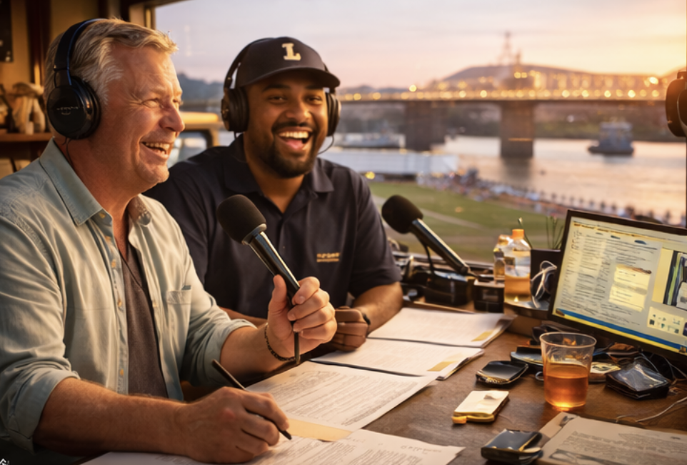
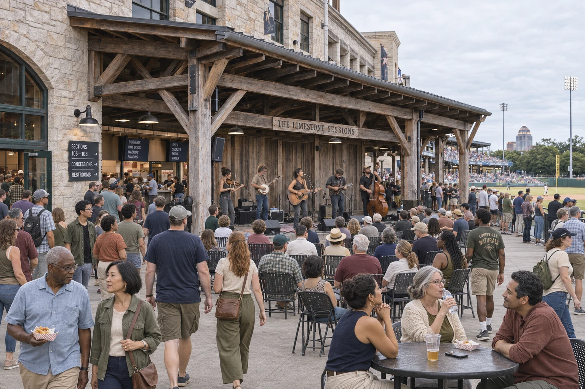
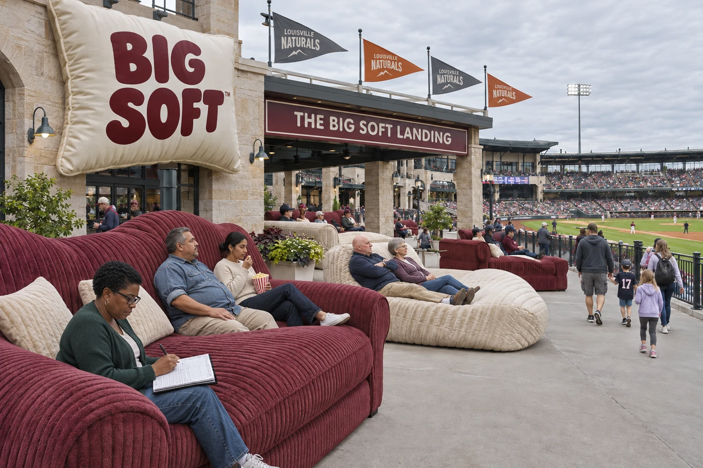
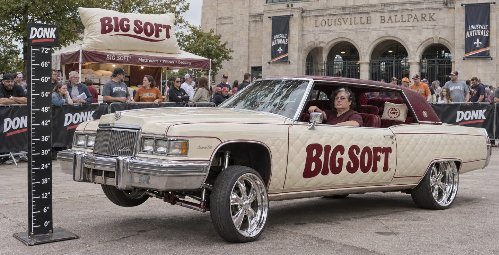
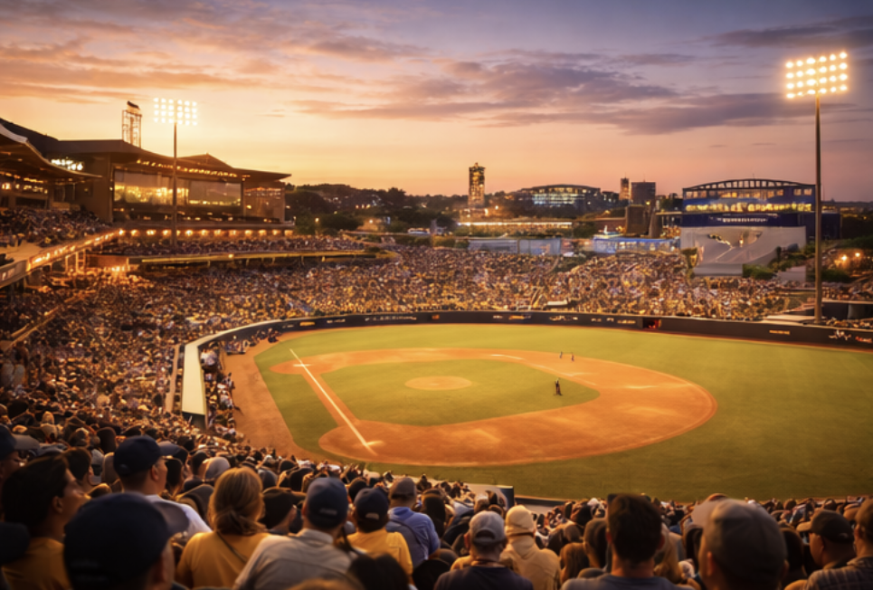
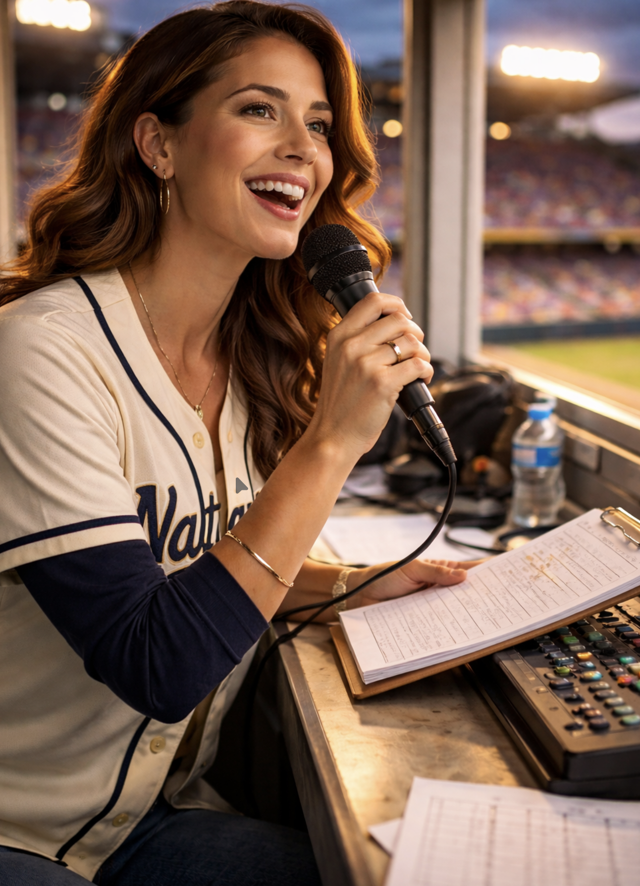
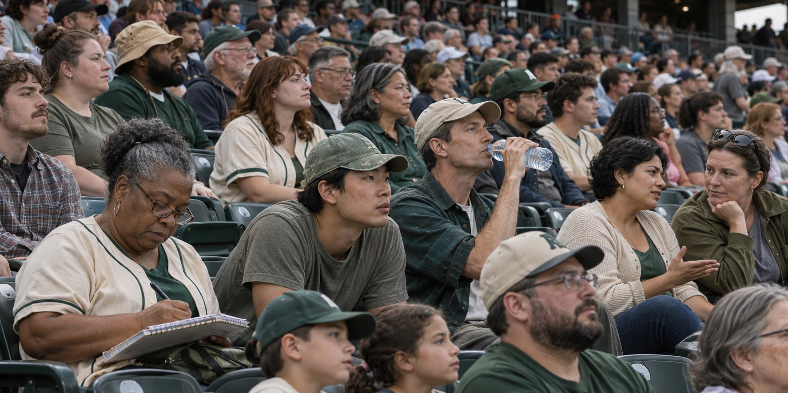

Hank Mercer
Play-by-play. Keeps the count clear and leaves room for the crowd.

A porch set. A ballgame. Stay a while.
The Limestone Sessions →Manager: Everett “Fieldnote” Lane · Home: The Limestone Grounds
View standings →Click a card to flip it over. Claim a player and help build their story. Players and other artifacts across GLB can be claimed, curated and crafted — by you. Look for unclaimed artifacts, then click to claim, craft your submission, and submit it to the GLB Board for review. If accepted, you’ll receive a 16-character claim code and we’ll post the artifact with your content and an attribution to the User ID you provide.
Loading the Louisville collection…
| Player | Pos | B/T | Age | Card |
|---|---|---|---|---|
| Gabriel Ionescu | SP | R/R | 29 | LOU-01 |
| Mateo Álvarez | SP | L/L | 27 | LOU-02 |
| Calvin Rhodes | SP | R/R | 31 | LOU-03 |
| Santiago Correa | SP | R/R | 26 | LOU-04 |
| Darius Okonkwo | SP | R/R | 25 | LOU-05 |
| Evan Sutter | RP | R/R | 28 | LOU-06 |
| Luis Delgado | RP | L/L | 30 | LOU-07 |
| Kieran Walsh | RP | R/R | 27 | LOU-08 |
| Noah Bianchi | C | R/R | 29 | LOU-09 |
| Mateo Fernández | 1B | L/R | 32 | LOU-10 |
| Jalen Brooks | 2B | S/R | 24 | LOU-11 |
| Rafael Costa | SS | R/R | 26 | LOU-12 |
| Dominic Russo | 3B | R/R | 28 | LOU-13 |
| Andre Wallace | CF | R/R | 27 | LOU-14 |
| Tomás Rivas | LF | L/L | 25 | LOU-15 |
| Blake Harrison | RF | R/R | 31 | LOU-16 |
Fiddle, banjo, mandolin, acoustic guitar and upright bass spill off the wide porch. Close harmonies ride above the picking; people gather near the stage, stop with their food or listen from the concourse tables.
The crew brings a raw edge to the set. The porch belongs to the park, with the game still in view beyond the crowd.
BIG SOFT makes mattresses, pillows and bedding. Its cream-and-burgundy lettering turns up on oversized cushions, the lounge terrace and one extremely upholstered Cadillac.
The brand takes comfort seriously. Everyone else is welcome to find that funny.

Enormous sofas and quilted loungers overlook the field. Take a seat, disappear slightly into the upholstery, and keep an eye on the game. The armrests are bigger than some people’s seats elsewhere in the park.

Flo brings an older Cadillac Coupe de Ville in cream and burgundy, with quilted body panels, oversized polished wheels and BIG SOFT across the doors. A small pillow sits in the plush rear cabin.
She works the hydraulics from the driver’s seat while the crew watches the DONK height gauge. Flo remains almost impressively unimpressed.

Stone, grass and open sightlines. The broad concourse connects the seating bowl, the Sessions porch and the Big Soft Landing.

Play-by-play. Keeps the count clear and leaves room for the crowd.

In-stadium announcer. Lineups, substitutions and announcements carry across the Grounds.

A towering head of wheat, a green Naturals jersey and well-worn work boots. Sprig makes the rounds with a groundskeeper’s broom and a look of permanent mild suspicion. A stray piece of popcorn merits a full inspection.

The Yard Walkers keep their route around the park: a stop at the rail, a conversation on the concourse, a song before returning to their seats.